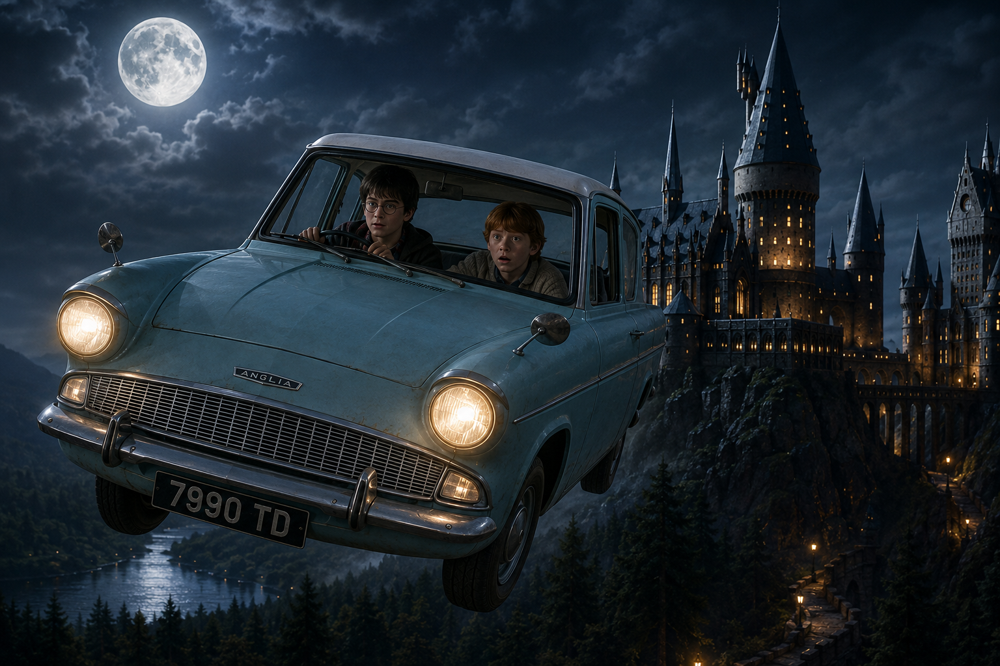
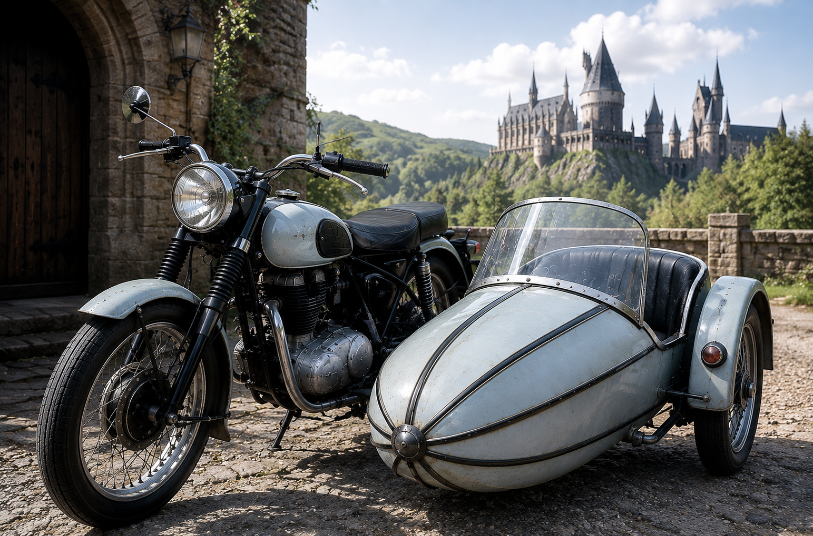
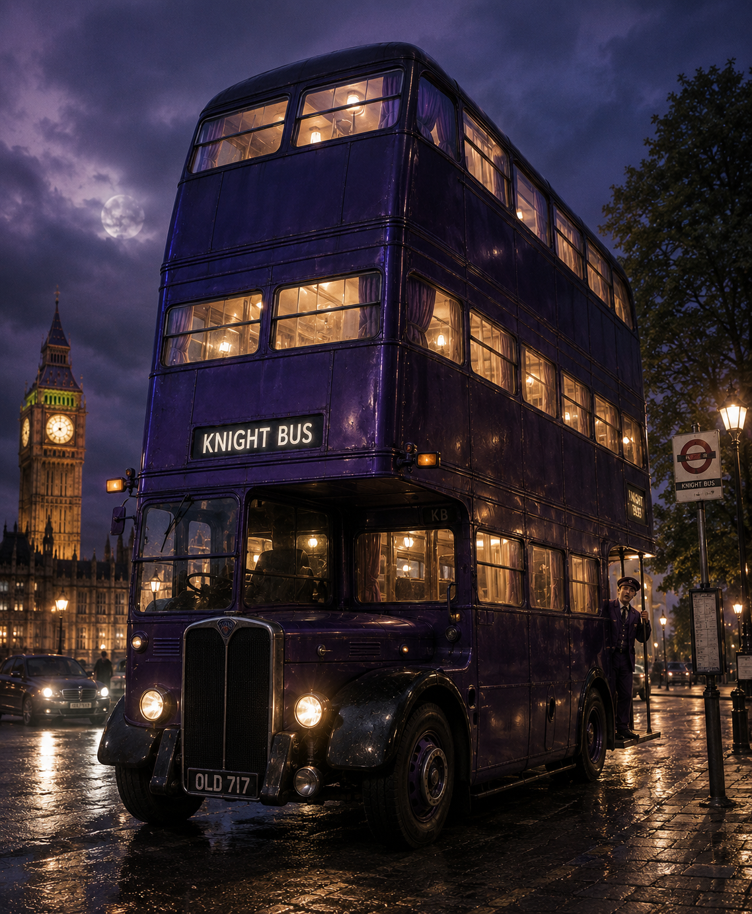
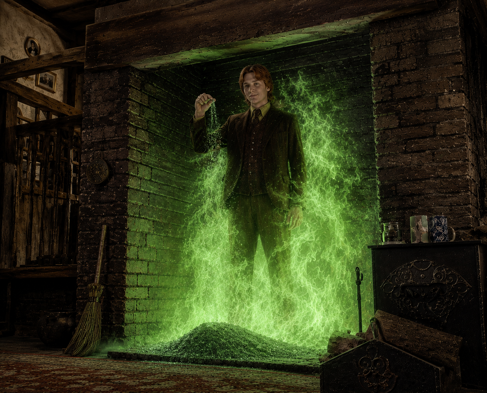
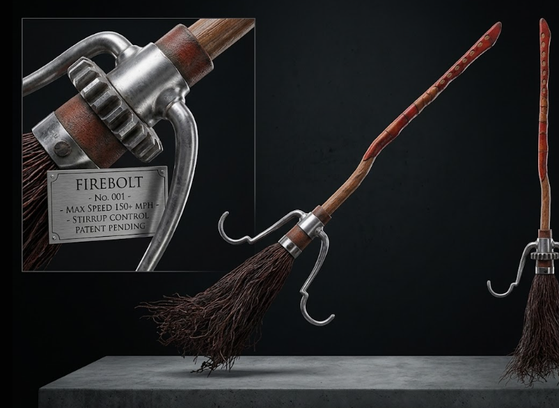

THE FREEDOM OF FLIGHT
For centuries, witches and wizards have possessed the remarkable ability to travel across great distances in the blink of an eye. The wizarding world relies on a complex network of magical transportation, from the roaring emerald flames of the Floo Network to the jarring hook behind the navel experienced when touching a Portkey.
Yet, the most celebrated method of travel remains the broomstick. Broom flight is not merely a mode of transport; it is the foundation of the wizarding world's greatest passion: Quidditch. This archive details the ingenious vehicles enchanted by curious wizards, the regulatory tools of the Department of Magical Transportation, and the legendary artifacts that define the high-speed, high-altitude sport.
I. MAGICAL TRANSPORTATION

THE FLYING FORD ANGLIA
A light blue, Muggle-manufactured Ford Anglia heavily modified by Arthur Weasley. Working in the Misuse of Muggle Artifacts Office, Arthur technically exploited a loophole in the law to enchant the car to fly, turn invisible with the push of a silver button, and possess an impossibly spacious interior.
The car famously rescued Harry Potter from Privet Drive and later crashed into the Whomping Willow at Hogwarts. It subsequently turned feral, roaming the Forbidden Forest like a wild animal.
SIRIUS BLACK’S MOTORBIKE
A massive, roaring Triumph Bonneville motorcycle enchanted by Sirius Black in his youth to fly. After the deaths of James and Lily Potter, Sirius lent the motorbike to Rubeus Hagrid to transport the infant Harry safely to Privet Drive.
Decades later, it was modified by Arthur Weasley to include a sidecar and defensive weaponry—such as dragon fire exhaust and a brick-wall-spawning button—used during the Battle of the Seven Potters.


THE KNIGHT BUS
Emergency transport for the stranded witch or wizard. The Knight Bus is a towering, triple-decker, violently purple AEC Regent III RT bus that appears when a wizard in need sticks out their wand arm.
The interior shifts depending on the time of day—featuring brass bedsteads at night and mismatched armchairs during the day. It travels at breakneck, physics-defying speeds, magically forcing obstacles like trees and Muggle cars to leap out of its path.
FLOO POWDER
A glittering, silvery powder invented by Ignatia Wildsmith in the thirteenth century. When thrown into a lit fireplace connected to the Floo Network, the flames turn emerald green and become completely harmless.
The traveler steps into the fire, states their destination clearly, and is whisked through a dizzying spin of grates. Mumbling or coughing while declaring the destination can result in arriving at wildly incorrect—and often dangerous—locations.


PORTKEYS
Everyday Muggle objects—such as an old boot, a rusty tin can, or a deflated football—enchanted with the *Portus* charm. They are designed to transport anyone touching them to a pre-arranged destination at a specific time.
The sensation of Portkey travel is notoriously unpleasant, described as a hook catching forcefully behind the navel and pulling the traveler forward in a whirlwind of color and sound. Unauthorized creation of a Portkey is strictly illegal.
VANISHING CABINETS
Tall, imposing wooden cabinets that, when used as a pair, create a secure, instantaneous passageway between two locations. They were highly popular during the First Wizarding War, allowing families to disappear instantly if Death Eaters came calling.
Draco Malfoy famously spent his sixth year repairing a broken Vanishing Cabinet in the Room of Requirement, successfully linking it to its twin in Borgin and Burkes to smuggle Death Eaters into Hogwarts.

II. QUIDDITCH ARTIFACTS

THE FIREBOLT
An international standard broomstick featuring a streamlined, ash-wood handle and individually selected birch twigs. It was the fastest broom in existence upon its release, capable of reaching 150 miles per hour in ten seconds.
It features an unbreakable Braking Charm, superb balance, and pinpoint precision. Sirius Black gifted a Firebolt to Harry Potter, which he used to outfly a Hungarian Horntail dragon and secure numerous Quidditch victories.
NIMBUS SERIES BROOMS
The Nimbus Racing Broom Company revolutionized the market with models like the Nimbus 2000 and the Nimbus 2001. The 2000, Harry Potter's first broom, featured a sleek mahogany handle and was widely considered the best broom available at the time.
The 2001 model was heavily favored by the Slytherin team after Lucius Malfoy purchased an entire set to buy his son Draco's way onto the team. They were highly maneuverable and exceptionally fast.


CLEANSWEEP SERIES
A reliable, historically significant line of racing brooms manufactured by the Cleansweep Broom Company, founded in 1926 by Bob, Bill, and Barnaby Ollerton. They were the first brooms to be mass-produced specifically for sports.
While outpaced by modern Nimbus models, models like the Cleansweep Seven were robust and highly dependable, heavily utilized by the Weasley twins during their time as Gryffindor Beaters.
THE GOLDEN SNITCH
A walnut-sized, golden sphere equipped with silver wings that flutter so fast they are nearly invisible. It is the third and most important ball used in Quidditch, worth 150 points to the Seeker who catches it, instantly ending the game.
Snitches have flesh memories; they remember the exact touch of the first person who handles them bare-handed. Due to this, the maker wears gloves during construction, ensuring the Snitch can identify its true captor in a disputed catch.


THE QUAFFLE
A seamless, spherical red leather ball, roughly the size of a football, used by Chasers to score goals through the three elevated hoops. Each goal is worth ten points.
Modern Quaffles are enchanted with Gripping Charms so they can be held securely with one hand, and with a Dropping Charm that causes the ball to fall slowly toward the ground if dropped, preventing players from having to dive continuously to retrieve it.
THE BLUDGERS
Two heavy, ten-inch, solid iron spheres enchanted to aggressively pursue all players on the pitch, attempting to knock them off their brooms. They show no prejudice and attack whichever player is closest.
It is the job of the Beaters, armed with small wooden bats, to protect their teammates and physically redirect the violent Bludgers toward the opposing team. They are notoriously dangerous and responsible for the majority of Quidditch injuries.


OMNIOCULARS
Highly advanced brass binoculars covered in dials and switches, indispensable for viewing professional, high-speed Quidditch matches. They allow the user to zoom in on specific players with perfect clarity.
Most impressively, they feature a replay function, can slow down the action, and flash play-by-play text across the lenses outlining tactical maneuvers, such as the *Wronski Feint* or the *Hawkshead Attacking Formation*.
WORLD CUP TENTS
At massive international events like the Quidditch World Cup, attendees reside in tents enchanted with intense Undetectable Extension Charms. From the outside, they appear as small, often pitifully constructed Muggle tents to maintain secrecy.
Inside, however, they can contain multiple fully furnished rooms, kitchens, four-poster beds, and complete bathrooms. Many are decorated lavishly with team colors, live peacocks, or miniature fountains.


MAGICAL TEAM BANNERS
Used heavily by fans in the stadiums, these large rosettes and banners are enchanted to loudly proclaim loyalty to a specific team. They are painted with magical paint that causes the team mascots, such as Lions or Eagles, to roar and pace across the fabric.
They often flash slogans, sing team anthems, and playfully insult opposing teams' banners in the stands, adding to the chaotic, electrifying atmosphere of a live Quidditch match.